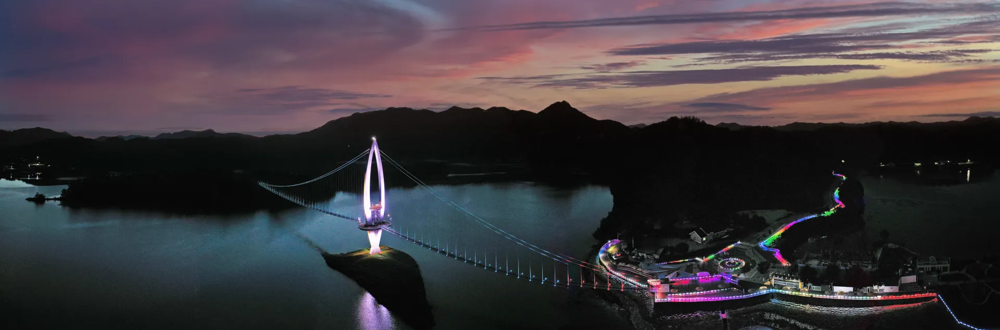
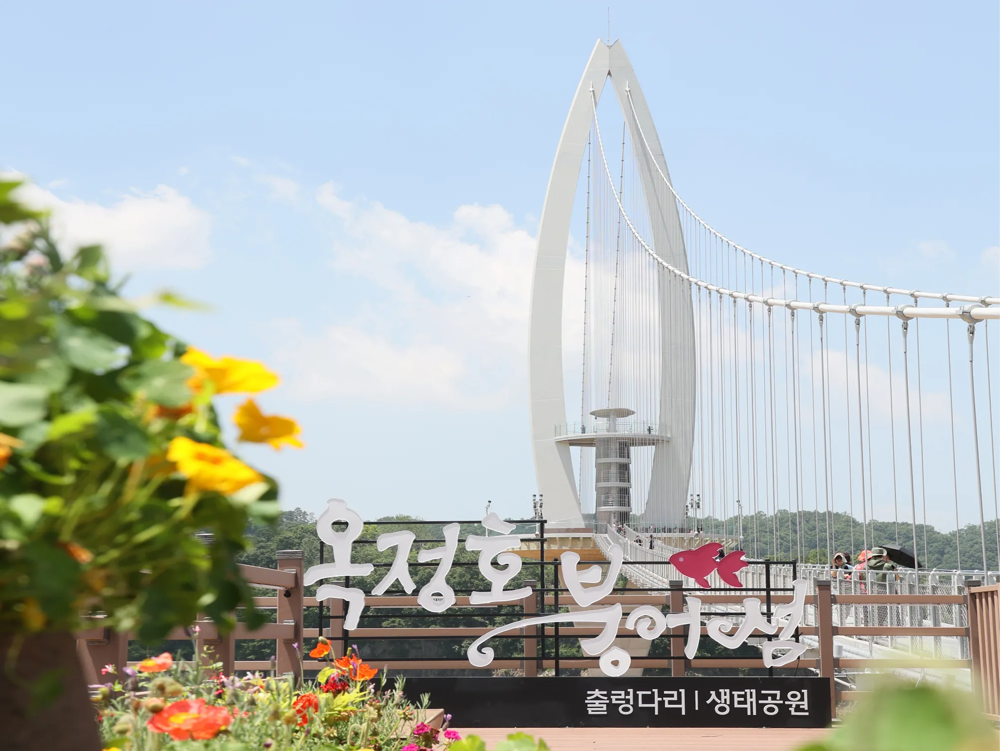
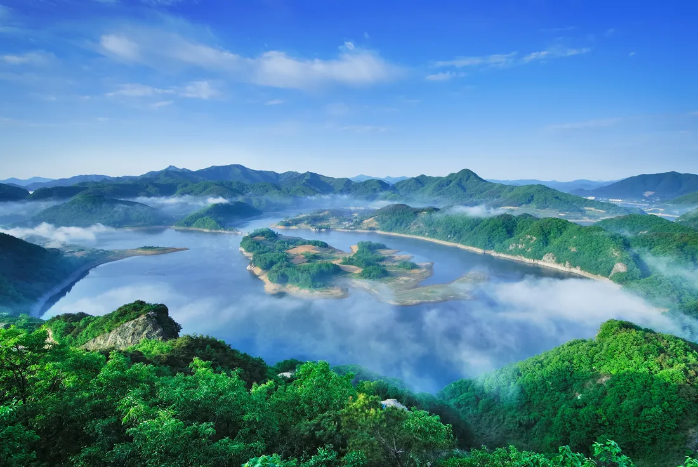
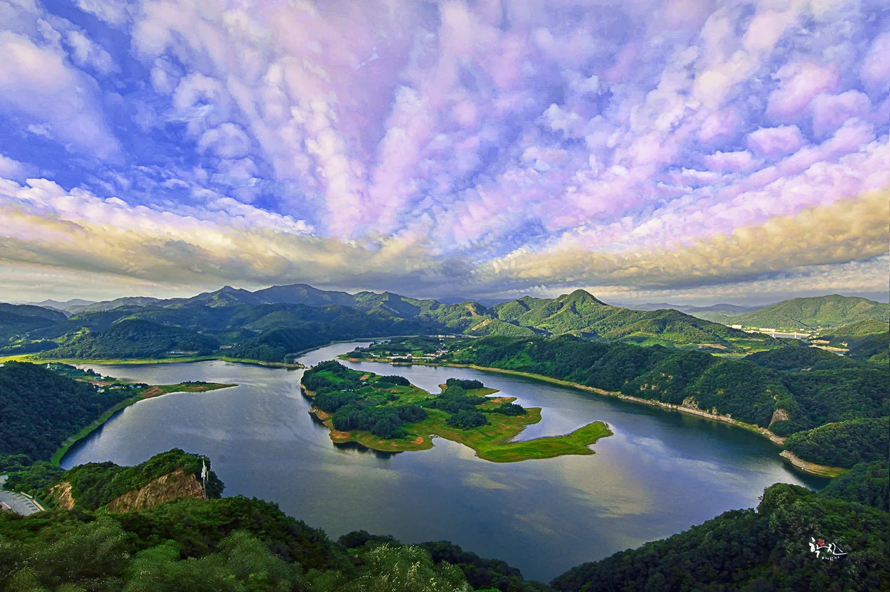
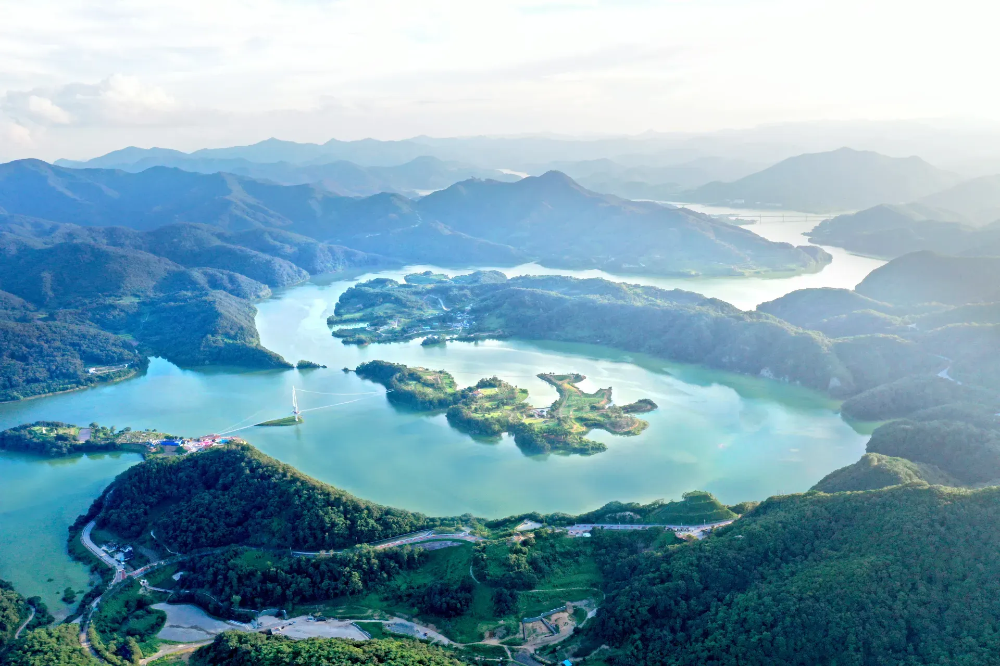
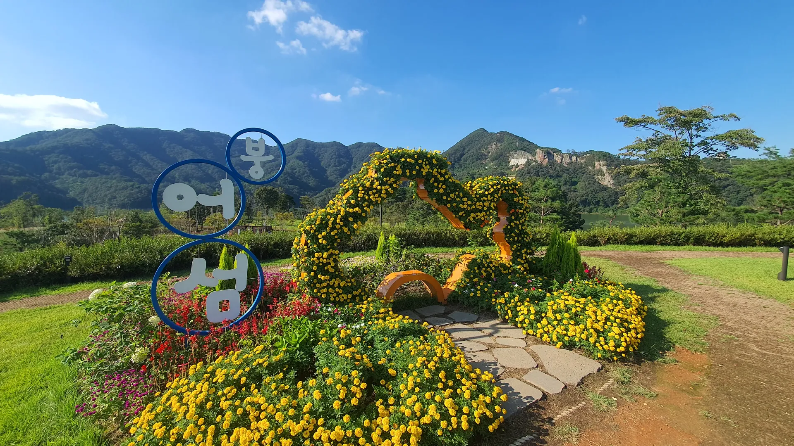

▲ 국사봉 전망대에서 내려다본 가을철 옥정호 붕어섬. 물안개와 단풍이 겹치는 새벽 시간대가 사진 명당으로 꼽힌다 ⓒ 임실군

▲ 요산공원과 붕어섬을 잇는 옥정호 출렁다리. 길이 420m, 폭 1.5m 규모의 현수교다 ⓒ 임실군
전북특별자치도 임실군 운암면, 섬진강댐 건설로 물에 잠기며 만들어진 인공호수 옥정호. 그 한가운데 남은 산봉우리가 물 위에 섬처럼 떠 있는 모습이 마치 붕어를 닮았다고 해서 이름 붙은 붕어섬은, 2020년 요산공원과 섬을 잇는 420m 출렁다리가 놓이면서 전국구 명소로 떠올랐다. 붕어섬 자체는 73,039㎡ 규모의 생태공원으로 조성돼 있어 다리를 건넌 뒤에도 볼거리가 이어진다. 특히 가을철, 그중에서도 이른 새벽은 옥정호 여행의 하이라이트로 꼽힌다. 산으로 둘러싸인 호수 특유의 기온차 덕분에 물안개가 자주 피어오르고, 여기에 단풍까지 겹치면 한 폭의 수묵화 같은 풍경이 만들어지기 때문이다.
1. 420m 출렁다리 — 건너는 것 자체가 코스

▲ 붕어섬 입구의 '옥정호 붕어섬' 조형 표지판. 다리 중간의 전망타워까지 오르내릴 수 있다 ⓒ 임실군
옥정호 출렁다리는 요산공원 주차장 쪽에서 시작해 물 가운데 솟은 작은 섬의 전망타워를 지나 붕어섬까지 이어진다. 다리 중간중간 흔들림이 있는 전형적인 현수교 구조에, 바닥 일부가 철망으로 돼 있어 발밑으로 호수 물빛이 그대로 비친다. 다리를 건너는 동안 사방으로 트인 옥정호 전경을 볼 수 있어, 붕어섬에 도착하기 전부터 이미 여행의 절반은 완성되는 셈이다. 주말에는 하루 평균 6,000명 안팎이 몰릴 만큼 인기가 높아, 다리 위가 붐비는 시간대를 피하고 싶다면 개장 직후 이른 시간이 유리하다.
2. 물안개 명당, 왜 새벽인가

▲ 국사봉 전망대에서 내려다본 옥정호. 산으로 둘러싸인 호수 지형 탓에 아침마다 물안개가 잘 낀다 ⓒ 임실군
옥정호는 사방이 산으로 둘러싸인 분지형 호수라, 밤사이 식은 공기와 상대적으로 따뜻한 수면 온도가 만나 새벽마다 물안개가 자주 발생한다. 특히 기온이 뚝 떨어지는 가을 새벽에는 물안개가 짙게 낀 채로 해가 떠오르면서 붕어섬과 출렁다리가 안개 위로 떠오르듯 보이는 장면이 연출된다. 사진 명소로 이름난 만큼, 물안개를 노린다면 새벽 6~8시 사이 도착을 목표로 움직이는 편이 좋다. 해가 오르고 기온이 오르면 안개는 빠르게 걷힌다.
3. 국사봉 전망대 연계 — 붕어섬을 한눈에

▲ 국사봉에서 내려다본 옥정호. 붕어섬 모양이 그대로 드러나는 대표 촬영 포인트다 ⓒ 임실군
붕어섬을 '붕어 모양'으로 온전히 담으려면 다리 위가 아니라 맞은편 산 위, 국사봉 전망대에 올라야 한다. 출렁다리에서 붕어섬 생태공원, 전승지 주차장, 용운마을을 거쳐 국사봉까지 이어지는 트레킹 코스는 왕복 약 4~4시간 30분이 걸리지만 경사가 완만해 등산 초보자도 어렵지 않게 완주할 수 있다. 시간이 넉넉하지 않다면 다리와 생태공원만 둘러보는 짧은 코스도 가능하지만, 옥정호 사진에서 흔히 보는 '항공샷' 구도를 직접 눈으로 보고 싶다면 국사봉까지 오르는 편을 권한다.

▲ 항공에서 내려다본 옥정호 출렁다리와 붕어섬 일대. 다리 건너편으로 요산공원 주차장이 보인다 ⓒ 임실군
4. 붕어섬 생태공원 — 다리를 건넌 다음

▲ 붕어섬 생태공원 내 꽃밭 조형물. 섬 전체가 꽃밭·산책로·잔디광장으로 조성돼 있다 ⓒ 임실군
다리를 건너면 만나는 붕어섬 생태공원은 섬 전체(73,039㎡)가 꽃밭·산책로·잔디광장·풍욕장·삼림욕장·숲속도서관 등으로 꾸며져 있다. 가을에는 억새길과 단풍길 구간이 특히 인기이며, 짧은 산책 코스(약 1.5km, 40분 내외)만으로도 섬 전체 분위기를 느낄 수 있다. 임실치즈로 유명한 지역 특성을 살린 임실엔치즈하우스 같은 부대시설도 섬 안에 자리해, 다리만 건너고 돌아 나오기보다는 섬 안을 한 바퀴 도는 편이 여행이 훨씬 풍성해진다.
옥정호만으로 하루를 채우기 아쉽다면 임실치즈테마파크나 사선대와 묶는 코스를 짜볼 만하다. 임실치즈테마파크는 옥정호에서 차로 30분 안팎 거리로, 치즈·피자 만들기 체험과 유럽풍 건축물이 있어 아이를 동반한 가족 여행객에게 특히 인기다. 신선과 선녀가 내려와 놀았다는 전설이 깃든 사선대국민관광지 역시 임실 대표 코스로 꼽힌다. 계절 팁으로는, 물안개가 가장 잘 끼는 시기는 일교차가 큰 늦가을(10월 말~11월 초)이며, 봄철에는 요산공원 진입로 벚꽃길이 새로운 볼거리로 꼽힌다.
5. 접근 정보 — 요금·주차·운영시간
출렁다리와 붕어섬 생태공원 입장료는 성인 4,000원, 경로(노인) 3,000원, 초·중·고생 2,000원이며 임실군민은 1,000원이다. 운영시간은 계절에 따라 다른데, 3~10월은 오전 9시부터 오후 6시까지(입장 마감 오후 5시), 11~12월은 오전 10시부터 오후 5시까지(입장 마감 오후 4시)다. 1~2월은 시설 점검 등으로 전면 휴장하며 보통 2월 말에서 3월 초 사이 재개장한다. 매주 월요일은 정기 휴무일이니 방문 전 꼭 확인해야 한다. 주차는 전승지 주차장과 옥정호 출렁다리 주차장을 이용할 수 있다.
| 주소 | 전북특별자치도 임실군 운암면 용운리 259-3 일원 |
|---|---|
| 요금 | 성인 4,000원 · 경로 3,000원 · 초중고 2,000원 · 임실군민 1,000원 |
| 운영시간 | 3~10월 09:00~18:00(입장마감 17:00) / 11~12월 10:00~17:00(입장마감 16:00) / 1~2월 휴장 |
| 휴무 | 매주 월요일(정기), 동절기 시설점검 기간 |
| 주차 | 전승지 주차장, 옥정호 출렁다리 주차장 |
| 문의 | 붕어섬 생태공원 매표소 063-644-5000 / 옥정호힐링과 063-640-4551 |
세부 관람 코스와 실시간 공지는 임실군 문화관광 홈페이지에서 확인할 수 있다. 바로가기
✅ 옥정호 붕어섬 여행, 이것만은 확인하세요
· 물안개를 보려면 새벽 6~8시 도착 목표
· 입장료는 성인 4,000원, 매주 월요일 정기 휴무
· 붕어섬을 붕어 모양 그대로 보려면 국사봉 전망대까지(왕복 4~4시간 30분)
· 주차는 전승지 주차장·출렁다리 주차장 이용
· 1~2월은 시설 점검으로 전면 휴장 — 재개장 시점 사전 확인 필수
6. 정리
옥정호 붕어섬 출렁다리는 다리 하나만 건너도 충분히 볼만하지만, 진짜 절경은 이른 새벽 물안개와 국사봉 전망대에서 완성된다. 가을 단풍이 물안개와 겹치는 10월 말에서 11월 사이가 최적의 시기로 꼽히는 만큼, 전날 근처에서 묵고 새벽 일찍 움직이는 일정을 짜두면 후회 없는 방문이 될 것이다.